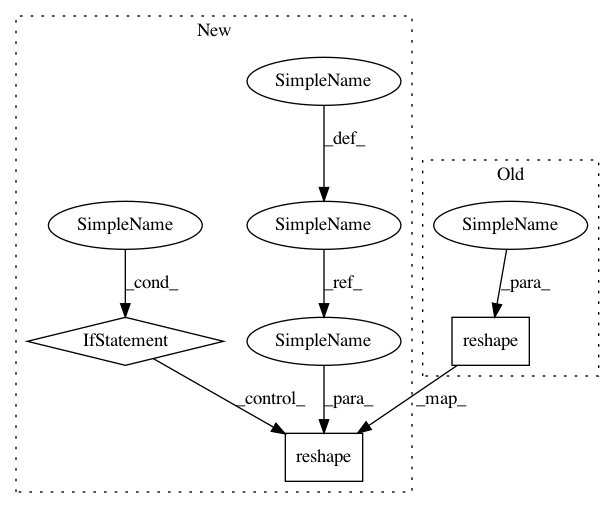

47c71c0524c7804863f2f4bcffdef5a873d84a55,txtgen/modules/connectors/connectors.py,,_mlp_transform,#,18
Before Change
flat_output = tf.split(fc_output, size_list, axis=1)
for (i, shape) in enumerate(shape_list):
flat_output[i] = tf.reshape(flat_output[i], tf.TensorShape(batch_size).concatenate(shape))
output = nest.pack_sequence_as(structure=output_size, flat_sequence=flat_output)
return output
After Change
flat_output = tf.split(fc_output, size_list, axis=1)
if isinstance(flat_output_size[0], tf.TensorShape):
for (i, shape) in enumerate(flat_output_size):
new_shape = tf.TensorShape(batch_size).concatenate(shape)
flat_output[i] = tf.reshape(flat_output[i], new_shape)
output = nest.pack_sequence_as(structure=output_size,
flat_sequence=flat_output)
return output
In pattern: SUPERPATTERN
Frequency: 3
Non-data size: 3
Instances
Project Name: asyml/texar
Commit Name: 47c71c0524c7804863f2f4bcffdef5a873d84a55
Time: 2017-10-16
Author: junxianh2@gmail.com
File Name: txtgen/modules/connectors/connectors.py
Class Name:
Method Name: _mlp_transform
Project Name: NifTK/NiftyNet
Commit Name: f360de0fa4454122d665b9c32f4d5911a4ebec0c
Time: 2017-08-19
Author: wenqi.li@ucl.ac.uk
File Name: niftynet/layer/loss.py
Class Name: LossFunction
Method Name: layer_op
Project Name: GPflow/GPflow
Commit Name: 921362e76cc476d008c78f390b61db4a280c7c73
Time: 2016-06-24
Author: james.hensman@gmail.com
File Name: GPflow/likelihoods.py
Class Name: MultiClass
Method Name: predict_mean_and_var